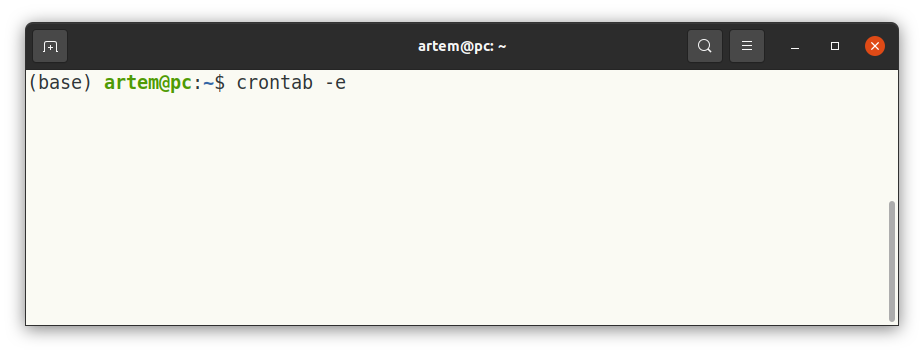
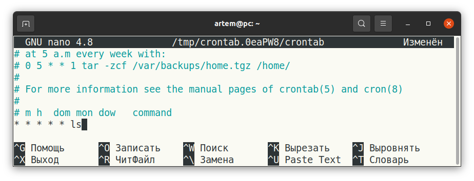
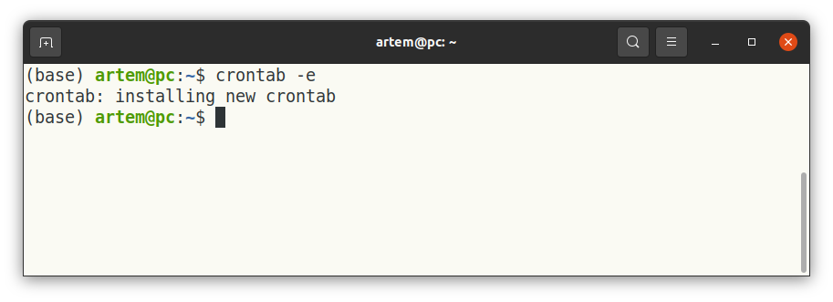
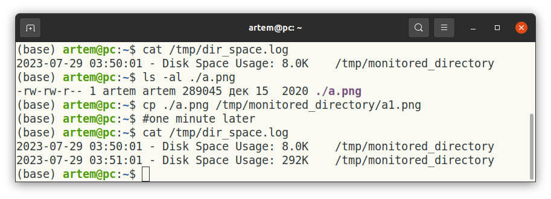
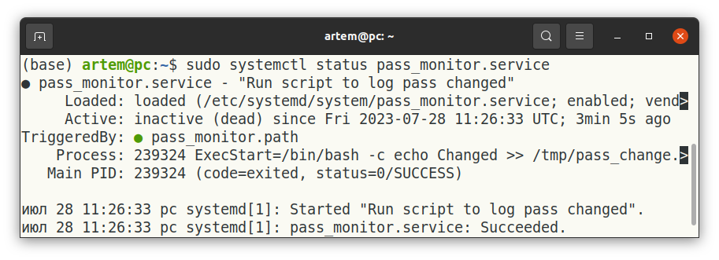
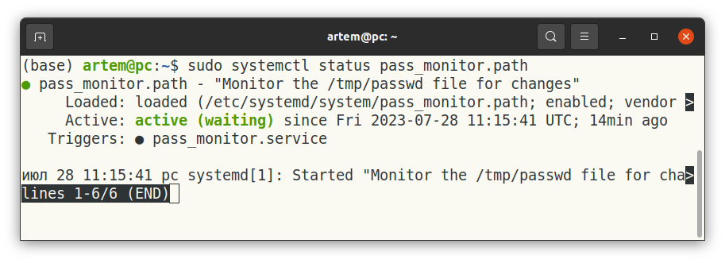
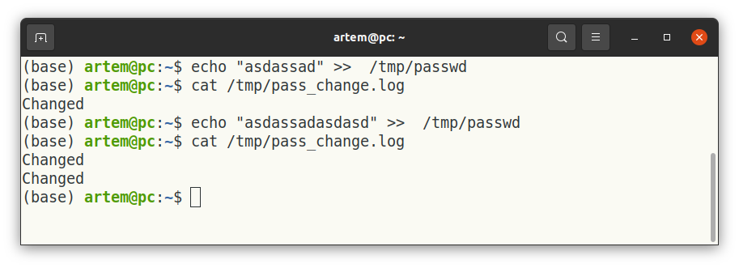
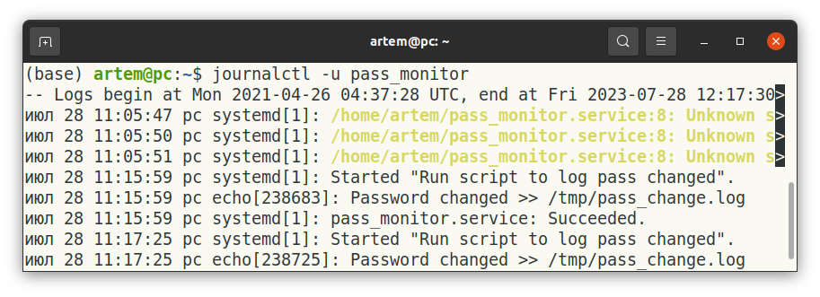

Менеджеры и планировщики¶
В данном уроке речь пойдет о менеджерах и планировщиках заданий. Они используются для того, чтобы запустить программы, которые написаны нами по расписанию (планировщики), и контролировать запуск/перезапуск приложений-сервисов (менеджеры).
Мотивация¶
Бывает множество случаев, когда нам нужно делать что-то периодически или обеспечить надежную работу приложений. Задачей, которую можно отнести к периодической, является мониторинг состояния жестких дисков, одной из наименее надежных частей компьютера, и отправка информации пользователю компьютера или системному администратору, если есть вероятность поломки. Задачей, которую можно отнести ко второму типу, является запуск приложения в виде сервиса, который должен быть доступен всегда для других приложений или пользователей, и если сервис «упал», менеджер сервисов должен попытаться перезапустить его.
Планировщик задач можно сравнить с тренером на групповой тренировке, он говорит, что делать в определенные моменты времени, но проследить за правильностью выполнения каждым участником тренировки не может. Так, он запустит задачу, но если она завершится с ошибкой, то это будет не зона ответственности планировщика, а зона ответственность разработчика.
Менеджер сервисов больше похож на индивидуального тренер, который заинтересован не только в запуске задач, но и в отслеживании их правильного выполнения. При этом менеджер сервисов не берет на себя достижение правильного поведения приложения, это по-прежнему задача разработчика, но менеджер сервисов может предоставить разработчику инструменты для того, чтобы облегчить запуск (например, только после того как мы подключимся к интернету) и поиск ошибок (например, с помощью журнала логов).
Планировщик crontab¶
В качестве примера планировщика мы будем рассматривать crontab. Crontab — это утилита-планировщик командной строки в операционных системах Linux, название означает cron table. Он используется для создания, управления и поддержки списка запланированных задач, известных как cron jobs. Задания cron — это автоматизированные задачи, которые выполняются через определенные промежутки времени или в определенное время, не требуя ручного вмешательства. Crontab позволяет пользователям планировать выполнение задач в определенные моменты времени, что делает его мощным инструментом для автоматизации повторяющихся или периодических действий в системе Linux.
Ключевые понятия crontab:
cron job — это отдельная задача или команда, выполнение которой запланировано через определенные промежутки времени. Каждое задание cron определяется как отдельная строка в файле crontab, т.е. в таблице заданий
cron table.расписание — это таблица, которая определяет, когда будет выполняться задание cron. Формат расписания состоит из пяти полей, представляющих минуты, часы, день месяца, месяц и день недели соответственно. Каждое поле использует определенный синтаксис для определения расписания. Пять звездочек в примере ниже представляют расписание для каждой минуты, каждого часа, каждого дня месяца, каждого месяца и каждого дня недели,
command_to_run— это задача, который нужно выполнить. Таким образом,command_to_runбудет выполняться каждую минуту без исключений.
* * * * * command_to_run
спецификаторы времени. Вместо использования звездочек для всех полей вы можете указать определенные значения или диапазоны для точной настройки расписания. Например:
0 3 * * * job запускает команду ежедневно в 3:00.
*/5 * * * * job будет запускать команду каждые пять минут.
* * */5 * * job будет запускать команду каждую минуту пятого числа каждого месяца.
* * * * 1,4 job будет запускать команду каждую минуту в понедельник и четверг.
15 1-5 * * * job будет запускать команду в 15 минут каждого часа с 01:00 по 05:00.
user-specific crontab. Каждый пользователь в системе может иметь свой собственный crontab, который управляется независимо. crontab текущего пользователя можно редактировать с помощью команды
crontab -e, выполненной вbash.system-wide crontab. Помимо пользовательских crontab, существует также общесистемный crontab, который позволяет системным администраторам планировать задачи, влияющие на всю систему и всех пользователей.
Пользоваться crontab очень легко, просто наберите в командной строке Linux crontab -e:

После этого откроется расписание задач, которое можно будет поправить как нужно.

По умолчанию crontab не будет будет логировать вывод вашего приложения (это не касается того, что вы сами используете внутри кода, например, с помощью loguru). Для того чтобы записать вывод вашего приложения, можно использовать синтаксис, подобный примеру ниже.
* * * * * /path/to/command >> /path/to/logfile.log 2>&1
Если мы вспомним урок про bash, то не найдем ничего нового: >> /path/to/logfile.log перенаправляет стандартный поток stdout в файл, а 2>&1 перенаправляет ошибки stderr в stdout, таким образом, мы запишем и ошибки, и простые сообщения.
Типичные варианты использования crontab:
Автоматическое резервное копирование: запланируйте регулярное резервное копирование важных данных, чтобы обеспечить безопасность данных и варианты восстановления. Большие программы, скорее всего, будут иметь встроенный механизм для обеспечения резервного копирования, но
crontab— это универсальный способ, который можно использовать для любой задачи, в том числе для своих проектов.Обслуживание системы: автоматизируйте рутинные задачи по обслуживанию системы, такие как очистка временных файлов, оптимизация баз данных, зеркалирование данных (например, ночью, когда нет нагрузки на сеть со стороны пользователей) и так далее.
Периодические отчеты: создавайте и отправляйте по электронной почте или в чат-боте периодические отчеты, содержащие информацию о состоянии системы или статистику использования.
Выполнение сценариев по расписанию: запуск пользовательских сценариев через определенные промежутки времени для различных целей.
Практическое применение crontab¶
Рассмотрим скрипт, которые собирает информацию о месте на диске, которое занимает содержимое директории, и сохраняет эту информацию вместе с временем обращения к директории в файл. Настроим crontab так, чтобы наш скрипт запускался каждые 5 секунд. Мы будем использовать bash для написания скрипта, но вы можете написать скрипт на любом языке программирования.
Файл скрипта collect_dir_space.sh будет выглядеть следующим образом:
(код):
#!/bin/bash
target_directory="/tmp/monitored_directory"
log_file="/tmp/dir_space.log"
# Collect disk space occupied by the target directory
disk_space=$(du -sh "$target_directory")
current_date=$(date +"%Y-%m-%d %H:%M:%S")
# Log the disk space information with the current date
echo "$current_date - Disk Space Usage: $disk_space" >> "$log_file"
Теперь нужно создать директорию, которую нужно мониторить, и сделать так, чтобы скрипт можно было запускать.
mkdir /tmp/monitored_directory
sudo chmod +x collect_dir_space.sh
И добавим следующую строку в crontab, для этого выполним команду crontab -e (см. выше на скриншоте).
* * * * * /path/to/collect_dir_space.sh

И проверим, что все работает:

Мы видим, что в файл /tmp/dir_space.log добавляется информация о дисковом пространстве, занятом файлами в директории. Между вызовами cat /tmp/dir_space.log мы скопировали файл a.png, который занимает пример 282 кБ.
Менеджер systemctl¶
Мы будем рассматривать systemctl — это утилита командной строки, используемая в современных дистрибутивах Linux, которые используют систему инициализации systemd (отвечает за загрузку системы, управление системными службами/демонами, отслеживание состояния системы и обработку отключений системы.). Хотя systemd и systemctl связаны, это не одно и тоже. Для целей освоения этого урока можно считать, что systemctl предоставляет интерфейс systemd, который уже отвечает за запуск приложений. Примечание: правильнее было бы назвать менеджером systemd, но так как мы будем использовать его с помощью systemctl, мы позволили себе такую подмену понятий.
Он обеспечивает контроль над системными службами, демонами и другими модулями, позволяя пользователям управлять состоянием и поведением системы. Systemd — это система инициализации по умолчанию во многих дистрибутивах Linux, заменяющая традиционную систему инициализации SysV.
Ключевым элементом при работе с systemctl является Unit. Unit’ы могут быть нескольких типов: службы, сокеты, таймеры, точки монтирования и другие системные ресурсы. Каждый unit определяется файлом c конфигурацией, который предоставляет информацию о том, как запускать, останавливать, включать, отключать выполняемую команду и как управляется unit. Например, unit может быть постоянно включен и перезагружаться при падении или стартовать по расписанию (похоже на то, как это делает crontab).
* Ниже приведен пример конфигурации для службы/сервиса/демона, т.е. приложения, которое работает в фоне. Большинство строк можно понять интуитивно. `Description` описывает то, что делает приложение. `After` описывает зависимость, т.е. от чего зависит текущая служба, в примере ниже, мы ждем, пока не "поднимется" сеть. `ExecStart` описывает команду/программу, которая будет запущена. `Restart` описывает, когда нам нужно перезапустить службу, если она упала. [WantedBy](https://unix.stackexchange.com/questions/506347/why-do-most-systemd-examples-contain-wantedby-multi-user-target) и [Type](https://superuser.com/questions/1274901/systemd-forking-vs-simple) определяют состояние операционной системы и различные сценарии использования службы, для целей данного урока они не являются принципиальными, но вы можете изучить их самостоятельно.
[Unit]
Description=My Application Service
After=network.target
[Service]
Type=simple
ExecStart=python /path/to/my_script.py param1 param2
Restart=always
[Install]
WantedBy=multi-user.target
* Ниже приведен пример unit timer, который можно считать заменой `crontab`, но более сложной в конфигурировании. Мы создадим сервис с типом `Type=oneshot` что говорит systemd запустить его лишь один раз, и потом создадим таймер, который будет вызывать сервис по расписанию.
# Service that executed once when called; file my_service.service
[Unit]
Description=My Task
[Service]
Type=oneshot
ExecStart=/path/to/your/script.sh
# Timer to call service by schedule; file my_service.timer
[Unit]
Description=Run My Task Daily
[Timer]
OnCalendar=*-*-* 03:00:00
Persistent=true
[Install]
WantedBy=timers.target
Практическое применение systemctl¶
Еще одним интересным применением systemctl является мониторинг изменения файлов и отправка уведомлений. Ниже приведен пример сервиса, который будет логировать любую попытку изменения файла (также можно отправлять уведомления на почту или в мессенджер). Создадим файл для службы и сохраним его в файл с названием pass_monitor.service в домашней директории.
(код):
[Unit]
Description="Run script to log pass changed"
[Service]
ExecStart=/bin/bash -c "echo Changed >> /tmp/pass_change.log"
[Install]
WantedBy=multi-user.target
Теперь создадим path unit, который будет следит за файлом и вызывать наш сервис логирования. Создайте файл pass_monitor.path c содержимым.
(код):
[Unit]
Description="Monitor the /tmp/passwd file for changes"
[Path]
PathModified=/tmp/passwd
Unit=pass_monitor.service
[Install]
WantedBy=multi-user.target
Активируем unit’ы:
sudo systemctl enable /home/artem/pass_monitor.service
sudo systemctl enable /home/artem/pass_monitor.path
sudo systemctl start pass_monitor.path
Проверим, что все работает:
sudo systemctl status pass_monitor.service
sudo systemctl status pass_monitor.path
 
Убедимся, что все работает как задумано:

Как мы видим из примера выше, даже при использовании Unit другого типа (Path, как в примере) нам все равно нужно создать Unit service, который будет управляться Unit’ом другого типа. Мы указывали его как Unit=pass_monitor.service.
С помощью systemctl вы можете запускать (start), останавливать (stop), перезапускать (restart), перезагружать (reload), включать (enable), отключать (disable) и проверять состояние (status).
enable. Командаsudo systemctl enable my-serviceиспользуется для включения Unit. Можно рассматривать enable как функцию, которая регистрирует написанный нами Unit для systemd и включает автоматический запуск при загрузке или при выполнении условий его активации. После выполнения этой команды сервис можно запускать по имени без указания полного пути. Эта команда создает символическую ссылку на конфигурационный файл.disable. Командаsudo systemctl disable my-serviceиспользуется для отключения Unit’а, предотвращая его автоматический запуск при загрузке или при выполнении условий его активации. Она удаляет символическую ссылку на Unit.``. Команда
sudo systemctl start my-serviceзапускает работу Unit’аmy-service. Можно считать, что эта команда используется для ручного запуска Unit’а, например, для проверки работы или после устранения ошибки, которая не дает сервису работать в штатном режиме.stop. Командаsudo systemctl stop my-serviceпрекращает работу Unit’аmy-service.restart. Командаsudo systemctl restrat my-serviceпрекращает и запускает работу Unit’аmy-serviceзаново.reload. Командаsudo systemctl reload my-serviceиспользуется для перезагрузки конфигурации работающего Unit’а без его остановки. Часто используется, когда службе необходимо принять изменения, внесенные в ее файл конфигурации, без полного перезапуска.status. Командаsudo systemctl status my-serviceпредоставляет информацию о текущем состоянии Unit’а, например, работает служба, или она неактивна, сообщения об ошибках и время последнего запуска.
Также удобным инструментом для отслеживания работы службы, в том числе в режиме реального времени, является journalctl. Его можно использовать как журнал событий, связанных с работой вашего приложения. При этом это универсальный инструмент для систем Linux, который не связан с определенным языком программирования. Он обладает не таким широким функционалом, и его вывод не оптимизирован под конкретный язык, как специализированные библиотеки, его использование в некоторых случаях может быть удобнее.
